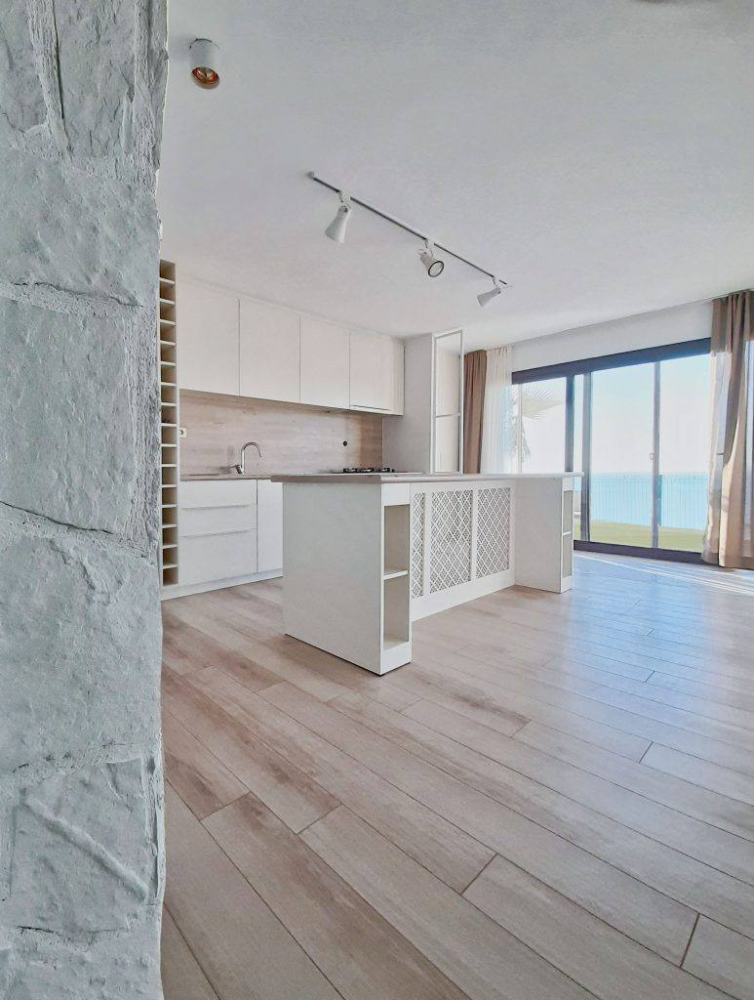
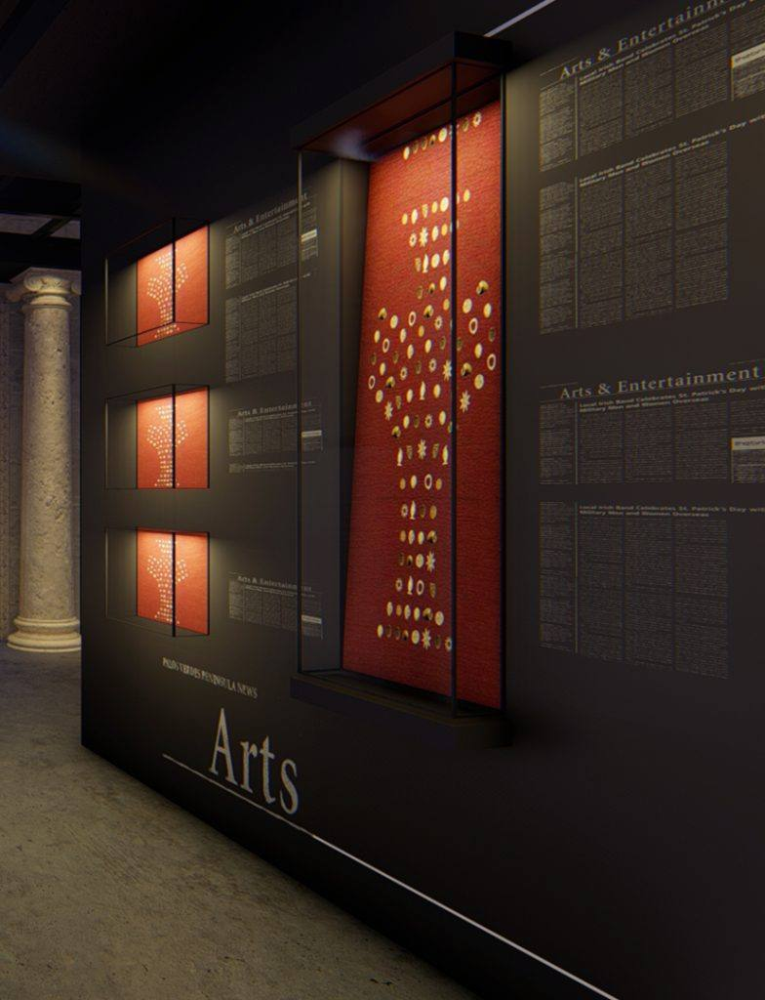
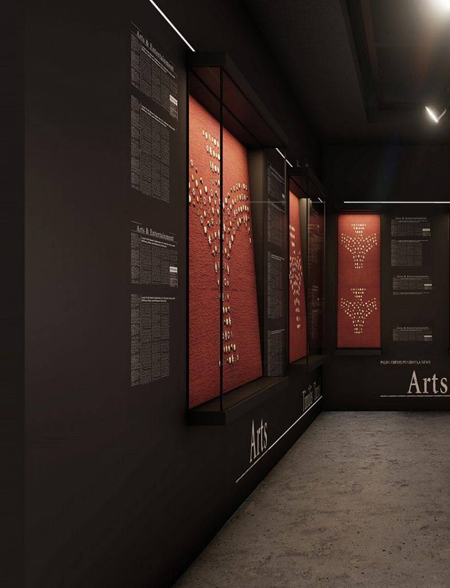

DESIGNSPACE × SPACE TECH.
Teknolojinin içinde yaşadığı mekânları tasarlıyoruz.
Design Space × Space Technologies
Tek bir fikrin iki yüzü: yaşadığımız mekânları ve onları mümkün kılan teknolojileri şekillendirmek — akıllı ortamlardan data centerlara, uydu ve uzay teknolojileri ekosistemine kadar.
Bir mimar, bir mühendis. Tek stüdyo.
ÇAĞKAN YAZICI
MON-IN'in ana kurucusu ve yaratıcı lideri. Mimarlık ve iç mimarlık projelerinde tasarım dili, görselleştirme ve mekânsal deneyim tarafını yönetir.
M. ALI YAZICI
Teknoloji, savunma sanayii siber güvenliği ve sektör buluşmaları tarafındaki uzmanlıkla MON-IN'in teknoloji katmanını güçlendirir; INSECSPACE gibi teknoloji odaklı organizasyonlarda aktif rol üstlenir.
Mekânı tasarlıyoruz.
Mimarlık ve iç mimarlık; konut, ofis, ticari, kamu ve kültürel projeler. AI destekli tasarım, BIM, görselleştirme, akıllı sistemler ve proje teslimi tasarımı performansla buluşturur.

Tasarımın, teknolojinin ve fiziksel altyapının kesiştiği yer.
MON-IN tasarım kabiliyetini teknik altyapıyla birleştirir: data centerlar, server roomlar, BIM otomasyonu, AI iş akışları, akıllı binalar ve diğer kritik teknoloji ortamları. Fiziksel katman ve disiplinler arası koordinasyona odaklanıyoruz; sunucu seçimi veya IT mimarisi tasarlamıyoruz.

Teknolojiyi görünür kılan alanlar.
Fuar standı tasarımı, 3D görselleştirme, üretim, kurulum ve saha koordinasyonu. Fiziksel mekân ile teknoloji anlatısını aynı deneyimde buluşturuyoruz.
Yalnızca uzay için değil — mekânı ve çevremizi dönüştüren teknoloji.
MON-IN; teknoloji odaklı mekânlardan siber güvenlik, uydu sistemleri, uzay teknolojileri ve bu alanların ekosistemine uzanır. Bu katman; fiziksel mekânı, dijital ortamları ve geleceği şekillendiren teknolojileri araştırır.
TUNCELİ
MUSEUM
MON-IN tarafından tasarlanan Tunceli Müzesi; European Museum of the Year Award, Luigi Micheletti Award ve 2026 DASA Award finallerinde yer aldı.

INSECSPACE’26
Innovations & Security in Space. MON-IN; konsept, dijital platform, marka iletişimi, etkinlik üretimi, sponsor/katılımcı koordinasyonu, mekan ve teknik operasyon ile panelist koordinasyonunu üstlendi.

BTK Conference Hall · Ankara · 29 April 2026
Mimari geçmiş. Yeni nesil yetkinlikler.
Mimarlık portföyümüzden seçilmiş işler ile yeni teknoloji ve altyapı çalışmalarını aynı hikâyede buluşturuyoruz.
ONE SPACE.
MULTIPLE DISCIPLINES.
Disiplinlerin arasında çalışıyoruz — fikirlerin fiziksel mekânlara, teknolojinin ise mekânın bir parçasına dönüştüğü yerde.
Mühendislik konuşan bir mimarlık stüdyosu.
MON-IN, mimarlık ve iç mimarlık köklerinden gelen bir Design & Technology Studio. Design Space ve Space Technologies aynı fikrin iki yüzü: yaşadığımız mekânları ve onları mümkün kılan teknolojileri şekillendirmek — akıllı ortamlardan data centerlara, uydu ve uzay teknolojileri ekosistemine kadar.
Design with intelligence.
İç Kapı No: 8, Çankaya